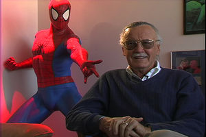

Stan Lee
 De: La Frikipedia, la enciclopedia extremadamente seria.
De: La Frikipedia, la enciclopedia extremadamente seria.
De la serie grandes personajes:
| Nacimiento
|
28 de Diciembre de 1922
|
| Muerte
|
todavia no, pero los fans lo quieren matar por haberle vendido Marvel a Disney.
|
| Ocupación
|
comics.
|
| Nacionalidad
|
Yanki
|
| Malo o bueno
|
Malo desde que vendio Marvel a Disney.
|
| Atentados contra la humanidad
|
Vender Capitán América y Iron Man.
|
| Religión
|
ex-judío
|
| Notas
|
Tiene 90 años y sigue siendo buena onda!!!
|
 Este es Stan Lee fumado al lado de su personaje favorito: Spider-Man
Stan Lee es y simpre sera, el dios de los Frikis. Porque si buscas a alguien que fué una fuente de inspiraccion para los Frikis, ese es Stan Lee. Él ha creado a todos los personajes de los comics que leen los Frikis, como Spiderman, Julk, Los cuatro Fanáticos y muchos mas (imagínense lo fumado que debía de estar, el vago).
Personajes de culto a los que creó Stan Lee
- Spiderman: Se le ocurrió la idea mientras veía a una araña comerse a un ornitorrinco en el techo.
- Daredevil (Dan Defensor): Se le ocurrió cuando un crío ciego le salvó de ser arrollado por Optimus Prime (en su forma de camión).
- Hulk: Basado en sus famosas erecciones.
- Mr. Fantástico: Se le vino a la cabeza mientras masticaba un preservativo creyéndose que era un chicle.
- Mujer Invisible: Basada en una novia imaginaria de su adolescencia.
- La Antorcha Humana: Mientras se fumaba su séptimo porro.
- La Cosa: Estaba sobrao hasta arriba de porros, y le dijo a Jack Kirby: "¡La puta, tío, la hostia! ¡Mira lo que se me ha ocurrido, que no te lo vas a creer, colega, que fuerte, que fuerte! Atento: ¡Un tabique que camina y habla! ¡La puta, tío, que idea!" Se dice que Jack contestó: ¿Pero que te has fumao, tronco? ¡Ni loco dibujo yo algo así! ¡Es un disparate!" a lo que Stan respondió: "Aquí mando yo, y si digo que hacemos a un tabique que anda, hacemos a un tabique que anda!" Y ahí se quedó.
- Iron Man: Cuando un primo suyo resbaló con una piel de plátano y se empotró contra la tele. Después de ello, se echó unas risas y murió. Por suerte, no fue en vano, pues dio la idea a Stan Lee para otro cómic.
- El Doctor Extraño: Dicen que se basó en un héroe de su infancia, pero en realidad, fue el propio Doctor Extraño el que le transmitió a Stan Lee, con ondas mentales paranoicas, la orden de dedicarle un cómic.
- Galactus: Se le ocurrió mientras pensaba en la foca de su primera novia, que se levantaba todas las noches para zamparse todo lo que le quedaba en el frigorífico, mientras dormía feliz tras mantener relaciones forzosas con ella. Ser poderoso y mortal como pocos, se trata de un ser galáctico que devora mundos y constelaciones (¡Huy, que miedo, que siniestroooo...! Solo jode un poco la forma en que viste; parece un cruce entre Optimus Prime y un Putón Verbenero).
- Thor: Dios nórdico vikingo del cual Stan Lee se apropió, blasfemando así ante todo lo que creían estas santas personas. Thor es el Dios del Trueno, controla la tormenta mediante su bonito mazo de juguete (que si le aprietas hace musica) y le gusta vestirse de mujer, aprovechando su larga y rubia melena (esto es cierto, leed algo de mitología nórdica si no me creeis).
- Magneto/Juan Carlos I, tipo que corre que se las pela, y no ha parado desde el día en que Juan Carlos I, su padre, mandó callar a Hugo Chávez)
- Magneto, al que, posteriormente, daría poderes para reinar en España. Desgraciadamente, no creó a Lobezno, pues éste fue inventado tiempo después para tratar de solucionar las bajas ventas que el cómic había tenido. Aún así, Stan Lee se hizo con el personaje como si fuera suyo, obedeciendo a la principal regla de hacer solo lo que a los fans les mola (Leer abajo).
- Cristina Tárrega. Aún así, se unió a la componente zumbada de los Cuatro Fantásticos (Patricia Conde) y al maníaco sexual de El Informal (Miki Nadal) para llevar a cabo su cruzada desde un medio más inaccesible que el del cómic: la televisión.
(Que la gran mayoría de los personajes expuestos aquí arriba no cuenten ya con su propio artículo en esta web demuestra lo incultos que somos en materia de superhéroes algunos de los frikis que pasamos por aquí, ¿eeeeh?
Religión StanLeenista
Como todo buen Dios Stan Lee tiene su propia religión: La Roligión Stanleenista. Esta religión se basa en unos sencillos mandamientos:
- Al levantarte rezarás ante Spiderman
- Antes de quitarte siquiera el pijama irás a tu quiosco más cercano a ver si ha llegado uno de los nuevos tebeos de Marvel.
- Después de desayunar, te leerás dos sagas de comics enteras.
- Entre todo lo que quede de día te tendrás que leer dos sagas mas, jugarás a un videojuego Marvel y verás una película Marvel.
- No leerás ningún tebeo de DC porque es el enemigo, ni ningún tebeo de la línea Ultimate porque en esa línea yo no he creado a los personajes.
Cosas que no sabes sobre Stan Lee
- Cuando escribía guiones él decía los diálogos en voz alta. MUY alta. Su mujer llegó a llamar al psiquiátrico. Y en cuanto salia de su habitación seguía gritando "¡BUMM! ¡SHMASH!"
- Stan Lee a hecho un cameo en todas las películas Marvel. Existen rumores de que en cada una de ellas ha tenido sobredosis en el rodaje.
- Stan Lee se saltó el código de los cómics para quejarse de un problema que le afectaba muchísimo: Las drogas.
- Stan lee siempre hace lo que les va a los fans. Cuando la gente reaccionaba bien a la muerte de Gwen Stacy, él había decidido que la mataran y cuando reaccionaban mal, lo habían hecho mientras estaba de vacaciones.
- Su personaje preferido de los 4 Fantasticos es un cartero que se quiso unir al grupo por saber mover las orejas.
- Stan Lee implantó lo que se acabaría conviertiendo en la seña de identidad de su editorial: Matas a un personaje, le resuscitas, le vuelves, a matar, le resucitas... hasta que ya no sepas como hacerlo.
- Se rumorea que Stan Lee fue Jesús en otra encarnació y que de alli le viene lo de Matas a un personaje, lo resusitas....
- Se han encontrado pruebas de que Stan lee dijo en Una entrevista: "A Brian Michel Bendis y a Mark Bagley le quedan seis meses de vida. Han superado mi record de números" Esa entrevista nunca llegó a publicarse por presion de la editorial.
- Es el inventor de los superpoderes y para drogarse.
Autor(es):
- Nexo
- Venenofan
- Roms
- Azulejos
- MarioDS
- Frikih
- WTF
- Telasampo
- Cibercrank
- Mad Max
Frikipedia 2005-2016, Licencia
GFDL 1.2 - Extraído por FrikiLeaks